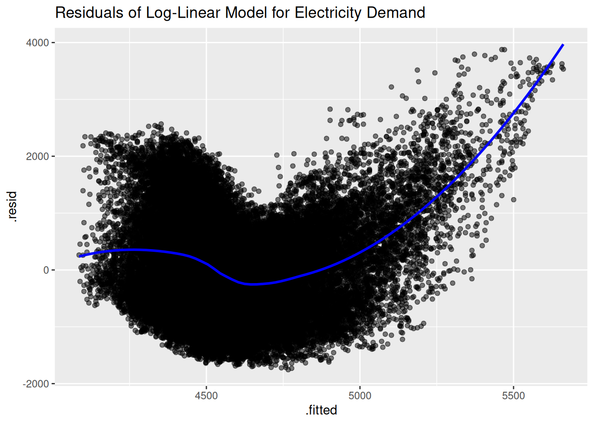
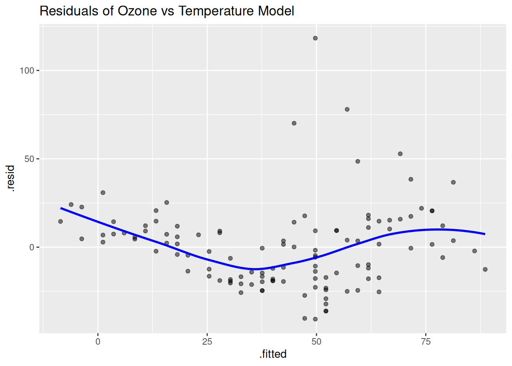

# Time Series Essentials, install if needed!
library(feasts) # Feature extraction & decomposition
library(fable) # Forecasting models (ARIMA, ETS, etc.)
library(fpp3) # Tidy time series dataseta
library(astsa) # Applied statistical TS methods from textbook
library(tseries) # Unit root tests & TS diagnostics
library(tsibbledata) # Curated TS datasets
library(quantmod) # Financial data retrieval
library(tidyquant) # Financial analysis in tidyverse
library(purrr) # Functional programming for TS pipelines
library(readr) # Efficient data importActivity11
Residual Analysis in Time Series Modeling
Core Concept
Residual analysis is crucial for verifying model adequacy in time series. Residuals \(e_t = y_t - \hat{y}_t\) reveal violations of model assumptions (independence, homoscedasticity, normality). We demonstrate this through three domains, using the glance() function for model diagnostics, and discuss error modeling strategies when residuals aren’t white noise.
Residuals are defined as the differences between the observed values and the corresponding fitted values:
\[ \begin{align} e_t &= y_t - \hat{y}_t, \end{align} \]
where \(y_t\) is the observed value and \(\hat{y}_t\) is the predicted value at time \(t\). Examining residuals helps assess model assumptions including independence, homoscedasticity, and normality.
Practical Implementations
1. Finance Example: European Stock Markets
We utilize the built-in EuStockMarkets dataset to illustrate a Box-Cox transformation and residual analysis on financial data.
# Convert the EuStockMarkets dataset to a tsibble
stock_tsibble <- as_tsibble(EuStockMarkets)
# Use the DAX index for analysis and determine the optimal Box-Cox lambda
stock_DAX <- stock_tsibble %>%
filter(key == "DAX")
lambda <- stock_DAX |>
features(value, features = guerrero) |>
pull(lambda_guerrero)
stock_DAX_BC <- stock_DAX |>
mutate(BoxCoxValue = box_cox(value, lambda))
# Fit a simple model with trend
fit_finance <- stock_DAX_BC %>%
model(lm = TSLM(BoxCoxValue ~ trend()))
fit_finance %>% tidy() %>% knitr::kable()| key | .model | term | estimate | std.error | statistic | p.value |
|---|---|---|---|---|---|---|
| DAX | lm | (Intercept) | 2.677081 | 0.0003964 | 6753.6546 | 0 |
| DAX | lm | trend() | 0.000000 | 0.0000000 | 114.5636 | 0 |
| key | .model | r_squared | adj_r_squared | sigma2 | statistic | p_value | df | log_lik | AIC | AICc | BIC | CV | deviance | df.residual | rank |
|---|---|---|---|---|---|---|---|---|---|---|---|---|---|---|---|
| DAX | lm | 0.8759912 | 0.8759245 | 7.31e-05 | 13124.81 | 0 | 2 | 6218.707 | -17709.87 | -17709.85 | -17693.28 | 7.32e-05 | 0.1358332 | 1858 | 2 |
# Residual analysis: Plot fitted vs residuals
fit_finance %>% augment() %>%
ggplot(aes(x = .fitted, y = .resid)) +
geom_point(alpha = 0.5) +
geom_smooth(method = "loess", col = "blue", se = FALSE) +
labs(title = "Residuals of DAX after Box-Cox Transformation")
Insight: If residuals show unexplained structure, consider adding seasonal components or switching to ARIMA.
2. Health Example: Electricity Demand in Victoria
Using the vic_elec dataset from the Tidyverts ecosystem, we fit a log-linear model to study the effect of temperature on electricity demand.
# Fit a log-linear model: log(Demand) as a function of Temperature
fit_demand <- vic_elec %>% model(TSLM(log(Demand) ~ Temperature))
fit_demand %>% gg_tsresiduals() +
labs(title = "Model Residuals")| .model | term | estimate | std.error | statistic | p.value |
|---|---|---|---|---|---|
| TSLM(log(Demand) ~ Temperature) | (Intercept) | 8.3034435 | 0.0023852 | 3481.30664 | 0 |
| TSLM(log(Demand) ~ Temperature) | Temperature | 0.0078263 | 0.0001385 | 56.50756 | 0 |
| .model | r_squared | adj_r_squared | sigma2 | statistic | p_value | df | log_lik | AIC | AICc | BIC | CV | deviance | df.residual | rank |
|---|---|---|---|---|---|---|---|---|---|---|---|---|---|---|
| TSLM(log(Demand) ~ Temperature) | 0.057225 | 0.0572071 | 0.0323145 | 3193.104 | 0 | 2 | 15635.07 | -180559.2 | -180559.2 | -180532.6 | 0.0323162 | 1699.938 | 52606 | 2 |
# Plot residuals against fitted values
fit_demand %>% augment() %>%
ggplot(aes(x = .fitted, y = .resid)) +
geom_point(alpha = 0.5) +
geom_smooth(method = "loess", col = "blue", se = FALSE) +
labs(title = "Residuals of Log-Linear Model for Electricity Demand")
# Fit a refined log-linear model with a quadratic term
fit_demand_quad <- vic_elec %>%
model(TSLM(log(Demand) ~ Temperature + I(Temperature^2)))
fit_demand_quad %>% gg_tsresiduals() +
labs(title = "Model Residuals")
| .model | term | estimate | std.error | statistic | p.value |
|---|---|---|---|---|---|
| TSLM(log(Demand) ~ Temperature + I(Temperature^2)) | (Intercept) | 8.6290530 | 0.0052048 | 1657.91105 | 0 |
| TSLM(log(Demand) ~ Temperature + I(Temperature^2)) | Temperature | -0.0312701 | 0.0005771 | -54.18703 | 0 |
| TSLM(log(Demand) ~ Temperature + I(Temperature^2)) | I(Temperature^2) | 0.0010463 | 0.0000150 | 69.60956 | 0 |
| .model | r_squared | adj_r_squared | sigma2 | statistic | p_value | df | log_lik | AIC | AICc | BIC | CV | deviance | df.residual | rank |
|---|---|---|---|---|---|---|---|---|---|---|---|---|---|---|
| TSLM(log(Demand) ~ Temperature + I(Temperature^2)) | 0.1367406 | 0.1367077 | 0.0295896 | 4166.324 | 0 | 3 | 17952.78 | -185192.6 | -185192.6 | -185157.1 | 0.0295909 | 1556.562 | 52605 | 3 |
# Residual analysis: Plot fitted vs residuals
fit_demand_quad %>% augment() %>%
ggplot(aes(.fitted, .resid)) +
geom_point(alpha = 0.5) +
geom_smooth(method = "loess", col = "blue", se = FALSE) +
labs(title = "Residuals of Log-Linear Model for Electricity Demand",
x = "Fitted Values", y = "Residuals")
Insight: Even with better metrics, residual autocorrelation persists – this signals the need for SARIMA models.
3. Environment Example: Air Quality Analysis
The built-in airquality dataset is used to analyze the relationship between temperature and ozone levels, followed by residual diagnostics.
# Prepare the 'airquality' data with a proper date variable
library(stringr)
airquality <- as_tibble(airquality) %>%
mutate(Date = lubridate::ymd(stringr::str_c(1973, Month, Day, sep = "-"))) %>%
arrange(Date) %>%
as_tsibble(index = Date)
# Fit a linear model: Ozone as a function of Temperature
fit_env <- airquality %>% model(TSLM(Ozone ~ Temp))
fit_env %>% tidy() %>% knitr::kable()| .model | term | estimate | std.error | statistic | p.value |
|---|---|---|---|---|---|
| TSLM(Ozone ~ Temp) | (Intercept) | -146.995491 | 18.2871736 | -8.038174 | 0 |
| TSLM(Ozone ~ Temp) | Temp | 2.428703 | 0.2331318 | 10.417724 | 0 |
| .model | r_squared | adj_r_squared | sigma2 | statistic | p_value | df | log_lik | AIC | AICc | BIC | CV | deviance | df.residual | rank |
|---|---|---|---|---|---|---|---|---|---|---|---|---|---|---|
| TSLM(Ozone ~ Temp) | 0.4877072 | 0.4832134 | 562.3675 | 108.529 | 0 | 2 | -530.8532 | 738.5126 | 738.7269 | 746.7734 | 568.4843 | 64109.89 | 114 | 2 |
# Compute fitted values and residuals
fit_env %>% augment() %>%
ggplot(aes(x = .fitted, y = .resid)) +
geom_point(alpha = 0.5) +
geom_smooth(method = "loess", col = "blue", se = FALSE) +
labs(title = "Residuals of Ozone vs Temperature Model")fit_env %>% gg_tsresiduals() +
labs(title = "Model Residuals")Lab Activities
Activity 1: Retail Sales Seasonality Analysis
Prompt
Using the aus_retail dataset (Tidyverts), analyze the “Takeaway food services” sector in Victoria.
- Fit a model incorporating both trend and monthly seasonality
- Perform residual analysis to assess model adequacy
- Discuss whether seasonality improves the model
Solution
# Subset data and fit seasonal model
retail_model <- aus_retail %>%
filter(Industry == "Takeaway food services", State == "Victoria") %>%
model(TSLM(Turnover ~ trend() + season()))
# Residual diagnostics
retail_model %>%
augment() %>%
ggplot(aes(x = .fitted, y = .resid)) +
geom_point(alpha = 0.5) +
geom_hline(yintercept = 0, col = "red") +
labs(title = "Residuals vs Fitted: Takeaway Food Services Model") 
retail_model %>% gg_tsresiduals() 
Key Insight
The season() term automatically creates 11 monthly dummy variables. Compare residuals before/after adding seasonality using glance() metrics like AIC.
Activity 2: Gasoline Production Transformation Study
Prompt
Using the gas dataset (astsa):
- Apply Box-Cox transformation with Guerrero’s optimal \(\lambda\)
- Compare residuals against a square root transformation (\(\lambda=0.5\))
- Identify which transformation better satisfies homoscedasticity
Solution
# Convert to tsibble and model
gas_ts <- as_tsibble(gas) %>% rename(Week = index, Production = value)
lambda_opt <- gas_ts %>% features(Production, guerrero) %>% pull(lambda_guerrero)
fit_opt <- gas_ts %>%
mutate(Transformed = box_cox(Production, lambda_opt)) %>%
model(TSLM(Transformed ~ trend()))
fit_sqrt <- gas_ts %>%
mutate(Sqrt = sqrt(Production)) %>%
model(TSLM(Sqrt ~ trend()))
# Residual comparison
gridExtra::grid.arrange(
autoplot(fit_opt %>% augment(), .resid) + labs(title = "Optimal Box-Cox"),
autoplot(fit_sqrt %>% augment(), .resid) + labs(title = "Square Root"),
ncol = 1
) 
Critical Check
Use glance(fit_opt) vs glance(fit_sqrt) to compare sigma (residual SD) - lower values indicate better variance stabilization.